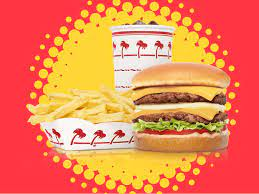
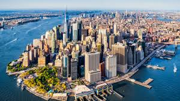

One of my favorite hobbies to do outside of school is swimming, because I get to hang out with friends at practice. At meets, I usually swim the 50 and 100 yard freestyle, but I don’t like to go to meets because I have to wake up very early. In my free time, I like to play video games on my laptop and phone. However, my laptop often cannot run very large games with high graphics properly because it is not meant for gaming, and it does not have enough storage space left. My favorite thing to do on the weekend is hiking with my family because I get to spend time outdoors and with my family.

My favorite fast food restaurant is In-N-Out, because their burger sauce is very tasty, and their ingredients all taste very fresh. In my opinion, the best part of an In-N-Out burger are the onions, because they add a satisfying crunch to every bite. I also like New York Pizza, because it is not overly cheesy, and the crust is very crispy, like a potato chip. If I were to choose any food to eat for the rest of my life, it would be sushi, because there are lots of varieties so I wouldn’t get bored of eating the same thing every meal. My favorite kind of sushi is the California roll, because you can taste all of the fresh ingredients clearly.
I like to travel because it is fun experiencing places that are very different from San Diego. I have been to almost every national park in California, and many others around the US. My favorite trip was to Yellowstone, because the geysers and wildlife were very fun to watch. My most recent trip was to New York, where I got to eat lots of good food. In the future, I wish to travel to places outside of the US to experience different cultures.
